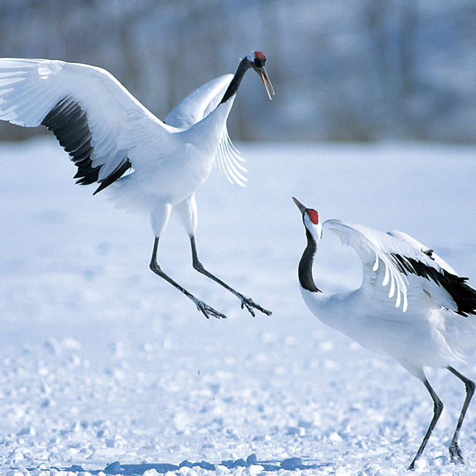

Japanese Crane
Papercraft kit : The graceful tancho crane.
Rare Animals of Japan

The Japanese crane, known for its slender, elegant figure, is a member of the crane family. It its considered to be most beautiful when it spreads open its long wings. In Japan, the Japanese crane, inhabits the eastern regions of the northern island of Hokkaido. After a drastic decrease in its numbers after World War II, various preservation efforts have led to a recovery of the Japanese crane population in recent years. The Japanese crane has been given an endangered species rating of 2 (Vulnerable [VU]) in the Red List, a Japanese version of the IUCN's Red List of Threatened Animals.
We have now re-created the beautiful figure of this Japanese crane as a paper craft model. Why not download your own copy now.
Download - Parts sheet & InstructionsThis data was released in March, 2000.

Japanese Crane - Animal Guide

- Japanese Crane - Gruidae
- Grus japonensis
- Body length 130 to 140 cm / Wingspan: over 200 cm
- RED DATA BOOK (RDB) categories : Vulnerable [VU]
The Japanese crane is the largest member of the crane family inhabiting Japan and it boasts a wingspan of over two meters.
Its body is mostly white while its head is "crowned" in bright red. Its bill is greenish yellow in color and an area of black feathers extending from part of the wings, up the throat and onto the back of the head adds beautiful contrast.
Also known as the Manchurian crane or the Japanese crane, the red-crowned crane is called "tancho" or "tancho-zuru" in Japanese. The name "tancho" is written with the Chinese characters "red" and "summit," which also indicates the "crown" of the head. The Japanese crane calls in a loud voice that carries for long distances. Particularly in the mating season the males and females call to each other in this resounding voice.
Japanese cranes build their nests on the ground from twigs and leaves and lay their eggs in the late spring to early summer. Their main food is small fish, but they also like to eat insects such as dragonflies and grasshoppers.
The crane is a symbol of longevity in Japan, as evidenced by the famous expression "a crane lives a thousand year and a tortoise ten-thousand." Originally this concept comes from traditional Chinese culture, where it has long been an auspicious bird related to longevity based on the ancient belief that the noble-figured crane was the messenger of the mountain recluse-sages of old. In fact, however, the average life span of the Japanese crane is 30 to 40 years.
Habitat
The Japanese crane is a crane of Eastern Asia inhabiting northeastern China, eastern Siberia, the Korea peninsula and Hokkaido, and its population is believed to be only about 2,000 birds.
The Japanese cranes living in the wild in Japan are found in eastern Hokkaido. Unlike its cousins on the Asian continent, the Hokkaido population does not migrate. Rather it tends to inhabit one area.
Historical records indicate that the Japanese crane could be found in all parts of Japan until the Edo Period (1600s to mid-1800s). But, in the years following World War II, it had reached the verge of extinction.
In 1952 the Japanese crane was designated a, "special natural treasure" of Japan and various preservation efforts got underway. Today the Japanese crane population in Japan has recovered to about 600 to 700 birds. However, the lack of suitable wetland areas present a continuing threat to the Japanese crane's habitat.
Photographed by Hokkaido Tsuruimura-Yakuba
About RED DATA BOOK
The Red Data Book is a report compiled by the Environment Agency classifying various threatened animals in Japan and their present status. From a biological viewpoint, the Environment Agency has evaluated the extinction risk level of each individual taxon and compiled a list for the Red Data Book. However, the Book possesses no legal power to enforce regulations concerning threatened species.
The Red Data Book is broadly employed as fundamental information for advancing the preservation of threatened wild animals.
| EXTINCT | EX | A taxon considered to have become extinct in Japan. |
|---|---|---|
| EXTINCT IN THE WILD | EW | A taxon known to survive only under conservation or in captivity. |
| CRITICALLY ENDANGERED | CR | A taxon facing an extremely high risk of extinction in the wild in the immediate future. |
| ENDANGERED | EN | A taxon facing a very high risk of extinction in the wild in the near future though not critically endangered. |
| VULNERABLE | VU | A taxon facing a high risk of extinction in the wild in the medium-term future though not critically endangered or endangered. |
| NEAR THREATENED | NT | A taxon which can qualify for VULNERABLE in the future depending on its habitat conditions, although it is not facing a high risk of extinction at this present stage. |
| DATA DEFFICIENT | DD | A taxon about which there is not adequate information to make a direct, or indirect, assessment of its risk of extinction. |
| THREATENED LOCAL POPULATION | LP | A taxon facing a high risk of extinction in a certain locality among its limited specific habitats. |
From Environment Agency press materials